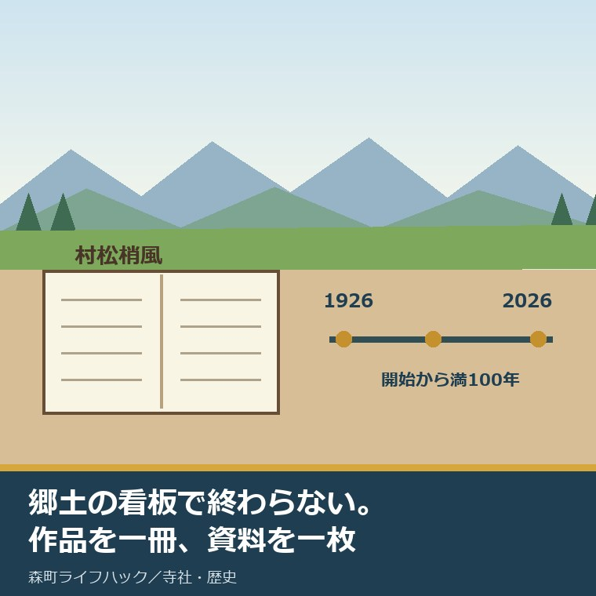
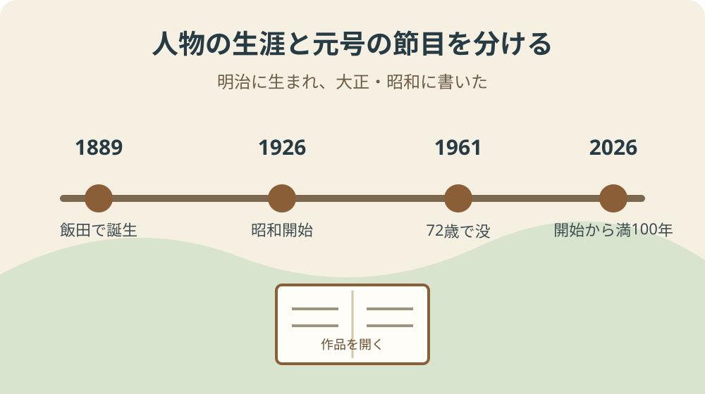
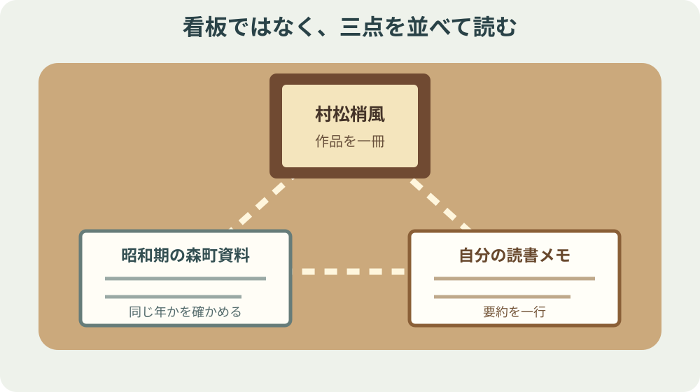

村松梢風とは｜昭和100年に森町から読む

この記事の要点
Q. 村松梢風を昭和100年にどう読めばよいですか。
A. 略歴、作品、同時代の森町資料を三つ並べます。村松梢風は1889年に飯田で生まれ、新聞・雑誌を経て作家となり、1961年に72歳で亡くなりました。2026年は昭和開始から満100年です。生家跡や墓所を訪ねて終わらず、作品を一冊開き、昭和期の森町で暮らした人々の記録と照合することが入口です。
「村松梢風とは」と検索すると、森町出身の作家、作品名、生家跡、墓所が見つかります。どれも大事です。ただ、肩書と場所だけ覚えても、梢風が何を書き、どの時代に読まれた人なのかは見えてきません。
2026年は、1926年12月に始まった昭和から満100年です。文化庁も「昭和100年」の取組を案内しています。この節目を記念の数字だけにせず、森町の作家を実際に読む機会にします。
郷土の偉人という看板だけでは、その人を読んだことにはなりません。作品名を一冊、同時代の森町資料を一枚、並べて初めて人物が立ちます。私はここを曖昧にしたくありません。
これは私の意見です。村松梢風本人に会った経験や、作品の初版本を所蔵する体験があるかのようには書きません。確認したのは、文化庁と森町が公開する情報、そして本サイトで整理した同時代資料です。
確認日は2026年9月2日です。展示、蔵書、見学条件は変わるため、利用前に図書館や施設の最新案内を確かめてください。
結論：生家跡の標柱から、作品の一頁へ進む
村松梢風は、本名を義一といい、1889年に森町飯田で生まれました。慶應義塾を中退し、雑誌や新聞の仕事を経て、大正・昭和期に作家として活動しました。町公式が挙げる作品には『本朝画人伝』『女経』『近世名勝負物語』があります。
梢風は1961年に72歳で亡くなりました。墓は高平山遍照寺の裏にあり、生家は現存せず、下飯田に生誕地を示す標柱があります。孫は作家の村松友視です。
この略歴は入口です。読む順番は、作品名を一つ選ぶ、刊行時期を確かめる、同じ時期の森町資料を一枚置く、本文で気になった一文を自分の言葉で要約する、の四段です。
昭和100年に必要なのは、昭和を懐かしい一色で塗ることではありません。長い昭和には不況、戦時、復興、生活の変化があります。作品が書かれた時期と地域の記録を混ぜず、並べて読むことです。
今日の小さな一歩は、町公式ページに出る三作品から一つを選び、図書館の蔵書検索か窓口で所蔵を確認することです。作品名、版、所蔵、確認日を紙に一行だけ書いてください。
村松梢風の基本情報を、確認できる範囲で置く
町公式の「森町の偉人」は、村松梢風の本名を義一、生年を1889年、出生地を飯田としています。出生地を現在の地番まで広げて推測する必要はありません。
学歴については慶應義塾を中退したと記載されています。その後、雑誌や新聞に関わり、作家へ進みました。華やかな成功談へ短縮せず、書く仕事の現場を経た人として見ます。
活動期は大正から昭和にまたがります。「昭和の作家」と一語で閉じると、大正期の仕事や、昭和の中でもいつ書かれたかが落ちます。作品ごとに初出や刊行年を確認する余地を残します。
没年は1961年、72歳です。2026年の読者から見れば65年前ですが、単に「昔の人」とせず、昭和のどこまでを生きたかを年表へ置くと距離が測れます。
森町には、生家そのものではなく生誕地の標柱が残ります。建物がないことと、記憶の手掛かりがないことは同じではありません。一方、標柱があることと作品を読んだことも同じではありません。

三つの作品名は、三つの入口である
『本朝画人伝』という題名からは、日本の画家をどう語ったかという入口ができます。題名だけで内容を決め付けず、目次、版、収録範囲を現物で確かめます。
『女経』は、題名だけを現在の価値観で評価して終えると、いつ、誰へ、どの媒体で書かれたかを落とします。違和感がある箇所ほど、刊行時期と文章を切り離さずに読みます。
『近世名勝負物語』は、人物や勝負の語り方を見る入口になります。史実の一次資料そのものではなく、梢風が構成した作品として扱い、事実確認には別の資料を使います。
三作品を「代表作」と一括りにするだけでは、読者が次に何を手に取るか決まりません。画人、社会観、人物物語という関心の違いから一つ選ぶと、最初の一冊が具体的になります。
版が複数ある場合は、底本、出版社、刊行年、収録巻を控えます。同じ題名でも抄録や再編集があり得るため、ページ番号だけを別の版へ持ち越しません。
昭和100年は、1926年から2026年までの満年数
文化庁は、2026年に昭和開始から満100年を迎えると説明しています。昭和元年を「1年目」と数えて100年目と呼ぶ話とは、数え方が違います。
昭和は1926年12月に始まりました。1926年のほとんどが昭和だったわけではありません。「1926年から100年」というだけで月日を消さないことが、年表の基本です。
梢風が生まれた1889年は明治です。昭和開始時には37歳前後、1961年の没年まで昭和を35年ほど生きました。人生全体を昭和だけに押し込めない見方が要ります。
昭和100年という新しい見出しは、古い資料を開くきっかけになります。ただし、節目があるから人物の評価が確定するわけではありません。作品を読む手間は残ります。
節目の企画や展示は期間が限られることがあります。企画名だけ保存せず、主催、期間、展示資料、確認日を控えると、終了後も何を見たか追えます。
注文したい点：作品と同時代資料をつなぐ
本サイトの昭和不況期の森町を銀行・土木・副業資料で読むでは、出来事、年、資料名、産業への影響を分けています。作品の刊行時期と地域の出来事を並べる台紙になります。
戦時期の森町を配給・動員・遺品・統計の資料カードで読むでは、家族の記憶と公式記録を別欄にします。作品中の時代描写を地域全体の事実へ広げないための線引きです。
森町の偉人・鈴木藤三郎を読む記事と比べると、同じ「偉人」でも実業と文学では残る資料が違うと分かります。顕彰の型を人物へ機械的に当てはめません。
森町の近世学問を文献目録でたどる記事は、書名、所蔵、版を分ける手順の参考になります。梢風の本を探すときも、題名だけでなく版を控えます。
内部リンクは梢風の作品内容を証明するものではありません。森町の時代背景や資料整理の方法を補うものです。作品本文の判断は、実際の本へ戻します。
町の人物紹介に、図書館で探せる版や所蔵への導線が加われば、標柱を見た人が作品まで進みやすくなります。ただし、蔵書の購入、目録の更新、貸出対応には司書と職員の時間が要ります。追加を求めるなら、その作業を誰が担うかも一緒に示すべきです。
作品の所在が町内で確認できない場合も、そこで切らず、県内図書館の横断検索、国立国会図書館の目録、復刻版の有無へ順に進めます。検索結果と閲覧できることは別なので、利用条件は各館へ確かめます。
同時代資料を並べる際は、作品の刊行年と資料が扱う年を別欄にします。「昭和期」という幅の広い一致だけで、梢風がその出来事を書いたと決めてはいけません。関連が未確認なら、未確認のまま残します。
案内板やウェブページの更新日も記録します。人物の生没年とページの更新年は別物です。情報の由来と確認日が分かれば、後継の担当者が全面的に調べ直す負担を減らせます。

良い点：森町がすでに残してきた手掛かり
町公式ページには、出生地、学歴、仕事、作品名、没年、墓所、生誕地標柱までまとまっています。初めて知る人が五分で入口へ立てるのは、記録を整理してきた人の仕事があるからです。
標柱や墓所を守るにも、草刈り、清掃、案内、寺との調整、説明更新が要ります。見学者には見えにくくても、地域の人がすでに払っている負担があります。
その努力を認めた上で、次の課題を具体名詞で出します。担い手、蔵書、版の確認、展示の更新、移動手段、案内の後継です。「もっと発信を」で済ませると、誰の仕事かが消えます。
生家が現存しないなら、建物再現を急ぐより、標柱から公式ページ、図書館の蔵書、同時代資料へつながる導線を整える方が先です。維持費の大きな物を増やす前に、今ある記録を使える形にします。
来訪者側にも役割があります。非公開地へ入らない、墓所で騒がない、作品を読まずに断定しない、確認した版を記録する。この小さな作法が、地域の負担を増やさない読み方です。
生誕地の標柱、遍照寺の墓、町公式の人物紹介は、三つの異なる手掛かりです。場所、供養、情報を一か所へ背負わせず、それぞれの役割を保てる点が良いと思います。
森町の歴史民俗資料館も、梢風だけの施設ではありません。農耕具、生活用品、古文書など地域全体の資料を扱う場所です。人物一人のために既存の仕事を押しのけず、問い合わせ時期や閲覧可否を事前に確かめる配慮が要ります。
町外から来る人には移動の確認も必要です。標柱、寺、資料館を一度に回れると決めず、所在地、開館、公共交通、徒歩距離を別々に確かめます。案内を維持する人の負担と、訪ねる人の安全を同時に見ます。
大石の視点：私が迷うのは、顕彰と批評の距離である
郷土の人物を書くと、良い面だけを並べたくなります。町を大切に思うほど、その誘惑は強くなります。
一方で、現在の読者が引っ掛かる題名や表現を、時代が違うの一言で閉じるのも雑です。作品を読んだ上で、何に違和感を持ち、どの資料で確かめたかを書きます。
私は、梢風を持ち上げるためでも、現在の基準だけで切り捨てるためでもなく、森町から読める一人の作家として置きたい。評価を急がず、読んだ箇所を示す方が誠実です。
町の人が誇りにしてきた対象へ外から採点表を持ち込む口調は避けます。同時に、誇りという言葉で作品を読まない状態も続けたくありません。
この迷いは解消していません。だからこそ、略歴、作品本文、同時代資料、自分の感想を四つの欄へ分けます。混ぜなければ、後から読み直して意見を変えられます。
不動産の仕事でも、建物の来歴と現在の状態を同じ欄へ書くと判断を誤ります。人物を読むときも似ています。町が残した略歴、作品に書かれたこと、後世の評価、私の感想を分ける方が、対象を雑に扱わずに済みます。
梢風の名を観光の材料として先に使うより、まず一冊を読める導線を整えたい。それでも読者が増えないかもしれません。私はその不確かさを認めた上で、読んでいない称賛を増やすより、一人が一頁を開く方を選びます。
課題は担い手と後継です。標柱の周りを整える人、作品を選書する人、目録を更新する人、問い合わせに答える人が途切れれば、名前だけが残ります。役割を一人へ集中させず、記録を渡せる形にする必要があります。
対案・結論：今日、作品名を一つ書く
紙かメモアプリに「村松梢風」と書き、その下へ『本朝画人伝』『女経』『近世名勝負物語』から一つだけ写してください。三冊を一度に読む計画は要りません。
次に、森町立図書館など利用できる図書館の蔵書検索か窓口で、所蔵の有無を確認します。見つからなければ、相互貸借や県内横断検索が使えるか尋ねます。
本が見つかったら、出版社、刊行年、巻、ページを控えます。最初の読書では、驚いた一文を長く写さず、自分の言葉で一行に要約します。
その横へ、昭和不況か戦時期の森町資料を一枚置きます。作品と資料が直接関係すると決めず、「同じ年か」「地域の状況は何か」という問いだけを書きます。
これで今日の作業は終わりです。郷土の偉人を看板から一冊へ動かすには、作品名を一つ書くところからで足ります。
記録用紙には、作品名、著者名、出版社、刊行年、巻、所蔵館、確認日、気になった箇所、自分の要約を九つの欄で置きます。埋まらない欄は「未確認」と書き、別の版の情報で穴を埋めません。
一週間後に続けるなら、同じ年の森町資料を一件だけ探します。関係を証明しようとせず、年と資料名を横へ置きます。違いが見えたら、それも読書の成果です。
よくある質問
Q1. 村松梢風とは、どんな作家ですか。
A1. 1889年に森町飯田で生まれた作家です。本名は義一。大正・昭和期に新聞や雑誌で活動し、『本朝画人伝』『女経』『近世名勝負物語』などを著しました。1961年に72歳で亡くなりました。
Q2. 2026年が昭和100年なのはなぜですか。
A2. 文化庁は、1926年12月に始まった昭和から2026年で満100年を迎えるとして、昭和100年の取組を案内しています。昭和元年を1年目と数える呼び方とは異なり、開始から満100年という意味です。
Q3. 村松梢風を森町で知るために、今日できることは何ですか。
A3. 町公式ページで作品名を一つ選び、図書館の蔵書検索か窓口で所蔵を確認してください。作品名、版、所蔵、読んだ日を一行に残し、昭和期の森町資料を一枚並べると、顕彰だけで終わらない読書になります。
生誕地標柱や墓所を訪ねる場合は、公開された案内、交通、安全、寺院や近隣への配慮を優先してください。本稿は作品の全内容や展示・蔵書の現況を保証するものではありません。
参考にした公式情報
- 村松梢風／静岡県森町（本名、出生、経歴、作品名、没年、墓所、生誕地標柱、村松友視との関係を2026年9月2日に確認）
- 森町の歴史／静岡県森町（郷土人物と町史情報への入口を2026年9月2日に確認）
- 森町立歴史民俗資料館／静岡県森町（森町の歴史資料を調べる公開施設の案内を2026年9月2日に確認）
- 昭和100年／文化庁（2026年が昭和開始から満100年であることを2026年9月2日に確認）

磐田市で小さな不動産業を営みながら、森町の空き家・農地・実家じまいのご相談を受けています。地域で残されてきた記録と、今日動ける手順を分けて書きます。
最終確認日：2026-09-02 ／ 本記事は公表情報と執筆者の見解を分けています。作品の内容評価は実物確認を前提とし、未確認の初出年や所蔵状況は推測していません。